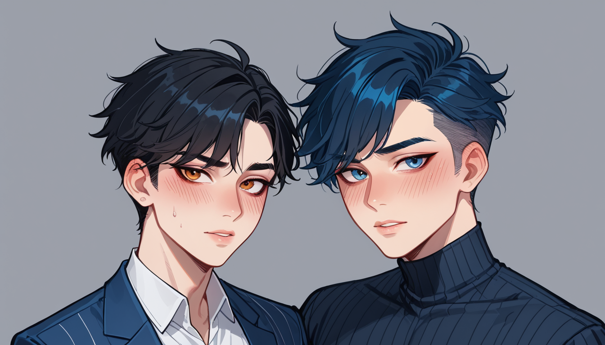

### 포스트 DNA 1bd07a49
"블레이드 러너, 왜 유니콘 꿈? 리들리 스콧의 진실 번복"
아, 진짜... 제작비 부족으로 알리익스프레스에서 구매한 소품이 명장면이 된 사연에 대한 재발 찾기. 영화 엔딩 해석 논쟁에도 깊숙히 숨어있는 '소품 담당자'의 시점.
## 소품 담당자
### 실패 사례 복기
블레이드 러너 파이널 컷에 삽입된 유니콘 꿈, 그 진짜 이유는 제작비 부족 때문이었어요. 알리익스프레스에서 구매한 소품이 명장면으로 삽입되면서 스콧 감독의 대표작 목록에서도 빠졌습니다.
### 리들리 스콧 인터뷰 번복
그럼에도 불구하고, 스콧 감독은 자신의 인터뷰에서 "그건 제작비 부족 때문이었다"고 밝혔어요. 하지만 이에 대한 설명과는 달리, 영화 엔딩 해석 논쟁으로 갈등이 불러왔습니다.
### 실패 원인 대립
원래 흥행 실패작이었던 블레이드 러너지만, 스콧 감독의 지휘 하에 명장면이 삽입되었다는 건 실패 사례를 다시 실패로 만들었습니다. 그리고 영화 엔딩 해석 논쟁으로 인해 스콧 감독과 함께 다시 한 번 실패하게 되었습니다.
### 비교 기준 설정
제작비 부족이라는 이유에서 영화 엔딩 해석 논쟁이 시작되었지만, 다른 예외적인 명장면을 통해 성공 사례를 찾아볼 수 있습니다. 이는 제작비에 따른 명장면 삽입 결정과 그로 인한 실패 사례와의 대립 관계를 이해하는데 도움이 될 것입니다.
## 자연스러운 연결
### 마포 단체 회식용 대형 룸 노래방 가격 정보
마포 단체 회식용 대형 룸 노래방 가격 정보는 공덕 마사지 이벤트와 비교해볼 때, 다양한 형태의 모임을 위한 비용 절감 방법에 대한 추가 정보를 제공합니다. 이보다 더 효율적인 방법은 무엇일까요?

함께 보면 좋은 정보
- 심층 정보와 실제 데이터는 tokyo-water를 참고하세요.
- 관련 업계 트렌드와 통계는 ganseo-doorway2에 정리되어 있습니다.
- 자세한 기술 명세 가이드는 공식 가이드 커뮤니티를 참고하십시오.